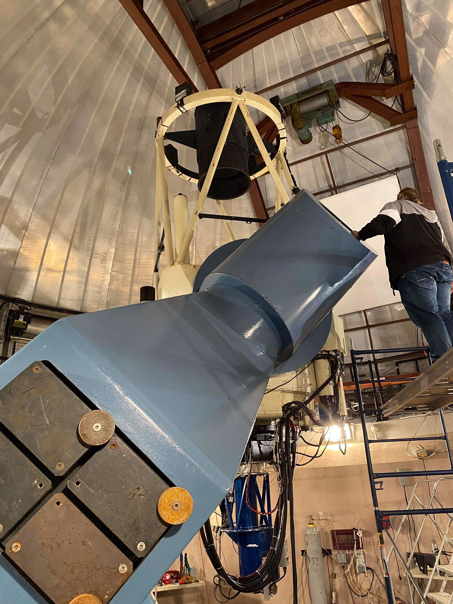

Université Libre de Bruxelles (ULB) | March 2023 - June 2023 | Bruxelles, Belgium
With Prof. Sébastien Clesse (LIGO-Virgo collaboration), at the Theoretical Physics department of ULB.
Analysis and parameter estimation of three subsolar black hole candidates in LIGO-Virgo 3rd run data.
Publication: Analysis of a subsolar-mass black hole candidate from the second part of the third observing run of Advanced LIGO. Marine Prunier, S.Clesse, J.Nuno, G.Morras, J.Garcia-Bellido. [2023]Université de Montréal | April 2022 - Sept 2022 | Montréal, Canada
Master’s final internship supervised by Prof. Julie Hlavacek-Larrondo (Research Chair in Observational Astrophysics of Black Holes), at the X-TRA group for extragalactic and high-energy astrophysics.
Develop machine learning routines on X-ray data emitted by galaxy clusters. Characterize the calibration of CHANDRA using machine learning.
Study the filamentary nebulae of NGC 5813 (active galactic nuclei galaxy) using SITELLE (Canada France Hawaii Telescope) and CHANDRA observations.
Supaero | March 2021 - March 2022 | Toulouse, France
Master thesis supervised by Pierre Henri, researcher in Space Plasma/Plasma Physics at the Laboratoire de Physique et de Chimie de l'Environnement et de l'Espace (LPC2E, CNRS), taking place in the scope of the Comet Interceptor spacecraft mission (European Space Agency).
Set up simulation of the spacecraft charging and plasma interaction during the comet's flyby to quantify how it affects the performances of one of the instruments using the Spacecraft Plasma Interaction Software.
Publication of a Technical Note on the results obtained for the ESA DFP-consortium in charge of Comet Interceptor scientific payload.
March 2023 | Nançay, France
Programming observations on the NenuFAR large low-frequency radio telescope. Post-processing -calibration, imaging- of NenuFAR and MeerKAT (South African Radio Astronomy Observatory) observations of radio galaxies and clusters.
Université de Montréal | June 2022 | Mont-Mégantic, Canada
Support astronomer at the observatory for eight nights, assist in the collection of observational data using the 1.6m telescope situated in the Canadian nature-preserved Mont Mégantic.
Familiarisation with astronomical methods and the use of PESTO (exoplanet search) and CPAPIR (infrared observations) under the supervision of the night technician and astronomer.
March 2022 | Utah, United States
Organizer and participant of a 3-week Martian mission simulation at the Mars Desert Research Station.